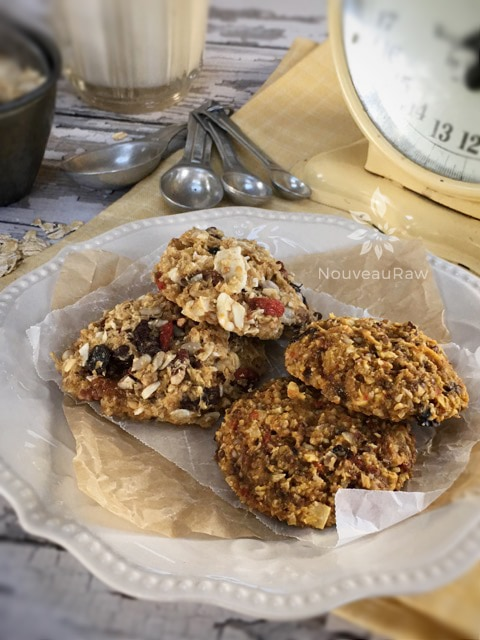

Fruitcake Cookies
~ raw, vegan, gluten-free ~
A holiday fruitcake that you can’t get rid of wouldn’t be a problem if it existed in cookie form… just saying… so here we go transforming that heavily fruited loaf into chewy cookies that are chock-full of sprouted nuts, oats, and dried fruit.
These little morsels won’t hit the pit of your stomach or the bottom of a trash can with a thud. Not that anyone would toss them in the trash, once again making reference to the typical actions of the traditional fruitcake. :) Bob swears there are only nine fruitcakes in the world and people just keep passing them around year after year.
When selecting dried fruit be sure to look for those that are sugar and sulfite free. In fact, the ingredient list should only have one item listed and that is whichever fruit that it is. Also, aim for organic if at all possible. I ask that you do the best that you can with what resources you have available. I want the best for you.
If ever there were a time to embrace fruitcake, this is the time and place! These cookies are firm on the outside and chewy on the inside. I think what throws off people the most with Fruitcake is the fact is all that candied dried fruit. I can clearly understand why a person would wrinkle their nose and warm up their throwing arm. There will be none of that here!
In fact, lets just totally strip away the idea that these are fashioned after the holiday fruit cake. I want these to be thoroughly enjoyed anytime of the year. This batter will make 44 cookies, so feel free to cut the recipe in half if you don’t need to make so many. Or you could freeze the extras to have them on hand for unexpected cravings. :) Ok, you go grab the oats and I will start gathering the dried fruits… let’s go have some fun in the kitchen. Many blessings and kitchen tidings. amie sue
yields 44 (1/4 cup size) cookies
- 4 cups raw rolled, gluten-free oats, soaked
- 1 cup raw almonds, soaked
- 1 cup diced raw pecans, soaked
- 1/3 cup raw sunflower seeds, soaked
- 5 cups mixed dried fruit, re-hydrated
- 3/4 cup pure maple syrup or equivalent
- 2 cups fresh apple juice
- 2 Tbsp vanilla extract
Preparation:
- Soak the oats, nuts, and seed according to the link provided above.
- Once done soaking, drain and rinse the nuts and seeds, placing them in an extra-large mixing bowl.
- Drain and rinse the oats for 2 minutes under cool water.
- Hand squeeze out the excess water and add the bowl of nuts and seeds.
- Place all the dried fruit in large bowl and add enough warm water to cover them. Let them soak for about 15 minutes.
- If the fruit pieces are large, cut into bite-sized pieces.
- Once done soaking, drain and place the dried fruit in the bowl with the oats, etc.
- The recipe calls for apple juice but if you don’t have any, you can use the soak water from the dried fruits.
- Add the coconut flakes, flax flour, nut flour, zest of lemon, salt, sweetener, juice, and vanilla to the bowl.
- All ingredients should be in the bowl at this point… if not, get them in there. :)
- Mix well with your hands, getting everything well coated.
- In two batches, add the batter to the food processor to break it down into smaller bits before making cookies. This is optional
- Allow the batter to sit for about 15 minutes, this activates the flax flour and will help to absorb some of the extra fluid.
- Using a 1/4 cup cookie scoop, place the cookies on non-stick sheets that come with the dehydrator.
- I did 9 per tray, leaving space in between them.
- Once a tray is full, pick it up by the bottom 2 corners. Lightly tap the tray on the counter top 2x, turn the tray and do this on each edge. This will somewhat flatten the cookies, making them the perfect cookie shape.
- Dry at 145 degrees (F) for 1 hour, reduce to 115 degrees (F) and continue to dry for 8-10 hours or until the desired dryness/moisture is achieved.
- Half way through, transfer the cookies to the mesh sheet to speed up the dry time.
- Dry times will always vary depending on the climate, humidity, model of machine and how full it is.
- All to cool, then store in an airtight container. This will freeze well too!
The Institute of Culinary Ingredients™
- To learn more about maple syrup by clicking (here).
- Click (here) for my thoughts on raw agave nectar.
- What is Himalayan pink salt and does it really matter? Click (here) to read more about it.
- Are oats gluten-free? Yes, read more about that (here).
- Are oats raw? Yes, they can be found. Click (here) to learn more.
- Do I need to soak and dehydrate oats? Not required but recommended. Click (here) to see why.
- Learn how to grind you own flaxseeds for ultimate freshness and nutrition. Click (here).
Culinary Explanations:
- Why do I start the dehydrator at 145 degrees (F)? Click (here) to learn the reason behind this.
- When working with fresh ingredients it is important to taste test as you build a recipe. Learn why (here).
- Don’t own a dehydrator? Learn how to use your oven (here). I do however truly believe that it is a worthwhile investment. Click (here) to learn what I use.

In this photo below you will notice what appears to be two different cookies. They are the same, I promise. I split the batter in two and made cookies with one half as is, and then blended the second batch a little longer in the food processor to make the batter more smooth. Both are great, just different textures.
© AmieSue.com